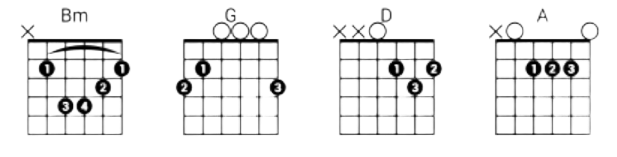

Портфолио
О проекте
Модули
Пример
Аналоги
Войти
50+ аккордов за
1 личный кабинет
10 упражнений — в работе
прямо сейчас
Все
Обучение
Практика
Аналитика
Библиотека аккордов
ПРОСВЕЩАЙТЕСЬ
База аккордов
Поиск по названию
Избранные аккорды
ГЕНЕРИРУЙТЕ
Генератор гамм
Подбор по тональности
Транспонирование
ПРАКТИКУЙТЕСЬ
Тренировки переходов
Таймер сессии
Дневник прогресса
Пример визуализации аккордов
отображение аккордов в формате Bm — G — D — A.

Аналоги веб-платформы
Ultimate Guitar
Songsterr
JustinGuitar